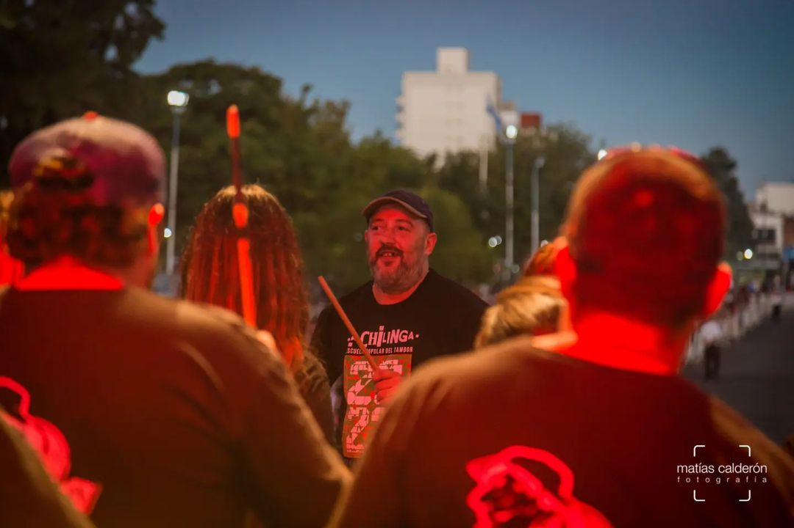

La Chilinga es una ESCUELA POPULAR de PERCUSIÓN, creada (en el año 1995) y dirigida por Dani Buira, quien fuera el fundador y baterista del grupo Los Piojos. Lleva grabados, como invitado de artistas populares, más de sesenta discos, participando en percusiones y batería.
La escuela se dedica al estudio, investigación, y ejecución de diferentes ritmos afroamericanos, como el Candombe uruguayo y argentino, Samba Reggae brasileño, Murga y Marcha Camión rioplatenses, toques de Makuta, Bembé, Rumba, Columbia, Abakua, Son, Candomblé y otros ritmos compuestos y creados por Dani.